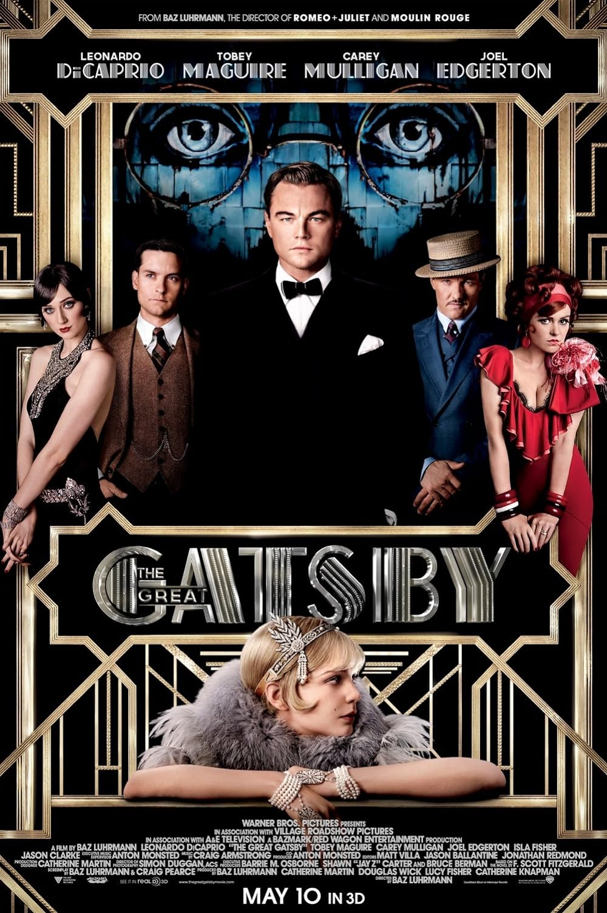
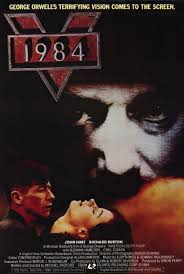

Popüler Kitaplar

The Great Gatsby
Yazar: F. Scott Fitzgerald
Yayın Yılı: 1925
Açıklama: The Great Gatsby, Amerikan rüyasının ve 1920'lerin bohem hayatının eleştirisini içeren bir romandır.

1984
Yazar: George Orwell
Yayın Yılı: 1949
Açıklama: 1984, totaliter bir rejimin distopik bir gelecekteki toplumunu tasvir eden bir romandır.
To Kill a Mockingbird
Yazar: Harper Lee
Yayın Yılı: 1960
Açıklama: To Kill a Mockingbird, Amerika'daki ırkçılık ve adalet sistemi üzerine güçlü bir hikaye sunar.
Harry Potter and the Sorcerer's Stone
Yazar: J.K. Rowling
Yayın Yılı: 1997
Açıklama: Harry Potter serisinin ilk kitabı, genç bir büyücü olan Harry'nin maceralarını anlatır.
The Catcher in the Rye
Yazar: J.D. Salinger
Yayın Yılı: 1951
Açıklama: The Catcher in the Rye, genç bir adamın ergenlik sorunlarını ve topluma uyum sağlama çabalarını ele alır.